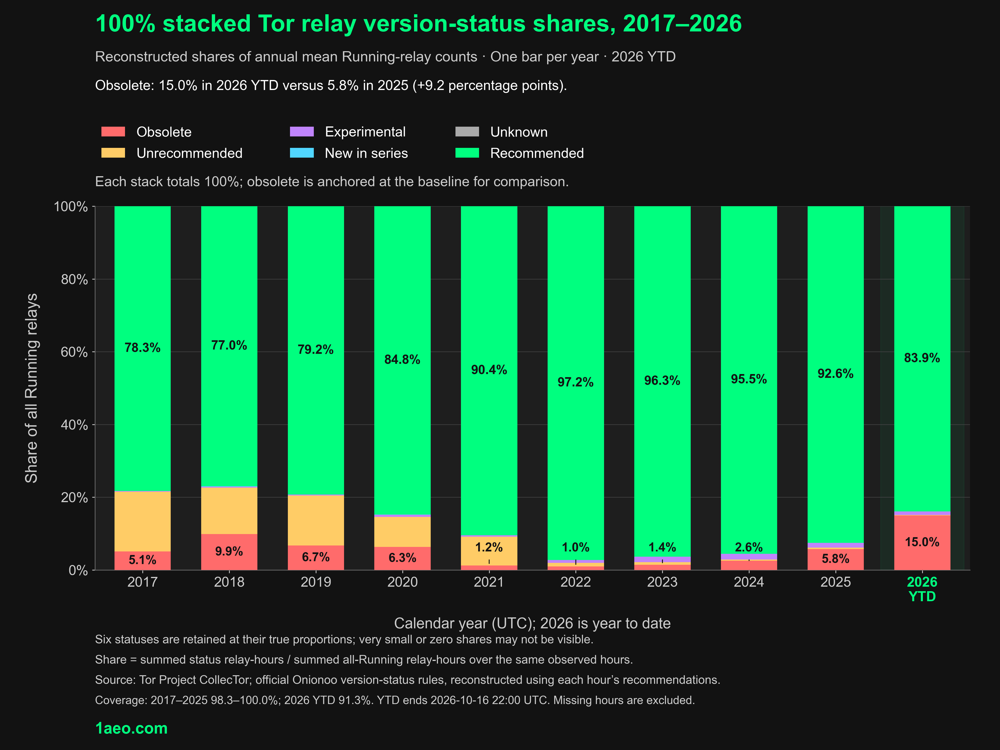
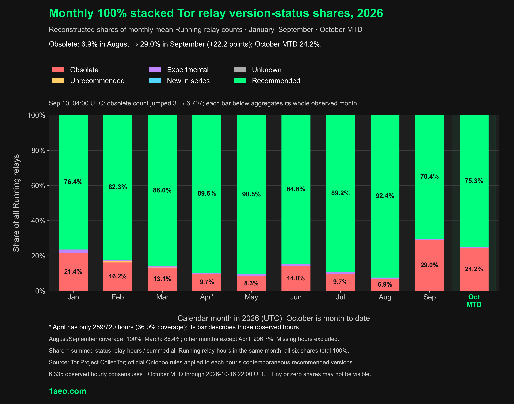

AI Helps Secure Tor: Obsolete Relay Average Hits a Ten-Year High
Tor’s 0.4.9.13 changelog credits security fixes to the LLM report firehose
.
As AI helps uncover Tor security flaws, the network faces a ten-year high in its average obsolete-relay count. Our 2017–2026 reconstruction puts 2026 YTD at 1,465 running relays on obsolete versions—nearly three times 2025—and 15.0% of observed Running relay-hours, above the previous full-year high of 9.9% in 2018.

The official changelog for 0.4.9.12 and 0.4.9.13 attributes high-severity security fixes to large language model (LLM) reports. Tor announced a roughly two-week security-release cadence, subject to change; versions 0.4.9.12, 0.4.9.13 and 0.4.9.14 arrived on September 8, September 23 and October 7.
Our CollecTor reconstruction shows the obsolete relay share rising from 6.9% in August to 29.0% in September, with October at 24.2% through the 16th. On September 10, the consensus’s recommended relay versions narrowed to 0.4.9.12, reclassifying older versions and pushing the obsolete count from 3 to 6,707 in one hour.

“Obsolete” means older than every recommended version. It is not a count of compromised relays or every relay missing the newest security fixes.
Keep your relay current: use Tor’s official packages and enable automatic updates on Debian or Ubuntu. Verify the running version after upgrades.